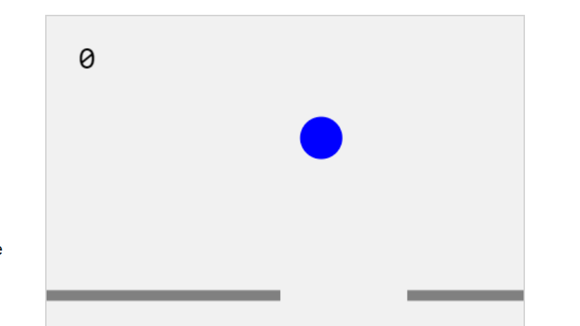

Most Recent
-

Self Driving Car DQN
Implemented a self driving car through a Deep Q Network Reinforcement Learning Model. Tested multiple networks includind a Convolutional Neural Network, Recurrent Neural Network and a hybrid model. -

Neural Network from Scratch
Developed an Artificial Neural Network without machine learning libraries (Tensor Flow, Keras, etc) in order to fully grasp the basic fundamentals of an artificial neural network's implementation. -

Linear Regression Visualizer
Animates the process of finding the line of best fit through gradient descent. Provides an intuitive visualization of the cost function and the steps taken to find the optimal minimum.
Machine Learning
-
Self Driving Car DQN
Implemented a self driving car through a Deep Q Network Reinforcement Learning Model. Tested multiple networks includind a Convolutional Neural Network, Recurrent Neural Network and a hybrid model. -
Neural Network from Scratch
Developed an Artificial Neural Network without machine learning libraries (Tensor Flow, Keras, etc) in order to fully grasp the basic fundamentals of an artificial neural network's implementation. -

String Guesser GA
Developed a Genetic Algorithm capable of guessing the inputted string. Applied mutation to arrive at the desired string in a minimal number of iterations.
This project was an experiment for the 2020 UofT Researchathon. -
Linear Regression Visualizer
Animates the process of finding the line of best fit through gradient descent. Provides an intuitive visualization of the cost function and the steps taken to find the optimal minimum.
Games
-

Function Ride
Developed an application intended for high school students to learn more about mathematical functions and their transformations in a playful approach. -

Bounce Around
Simple game developed in Javascript when I was first learning to code. -
Gaming Network
My first ever real program. I am including it here for nostalgic purposes :)

HDL
-

Square Animation
Manipulating VGA inputs, datapath and control systems to animate a square bouncing around on the screenVerilog
-

Polynomial Function Calculator
Calculates a polynomial function of the from Ax2 + Bx + C on an HDL circuit.Verilog
-

Sequence Detector
Finite State Machine that detects the binary sequence 1101 or four consecutive ones.Verilog
-

Morse Encoder
Implemented a Morse Encoder with a binary shifter and a rate divider.Verilog
-

Automatic Counter
Implemented a circuit that counts in hexadecimal using a rate divider.Verilog
-

Shifter
Implemented a binary shifter with arithmetic shift and parallel load using flip-flops.Verilog
Assembly Language
-

Recursive Functions
Recursive study in MIPS (Microprocessor without Interlocked Pipeline Stages) Assembly Language.MIPS
-

Arrays and Indexing
Study in MIPS Assembly Language to find a specific value in the inputted array.MIPS
-

First Assembly Program
Script to get familiar with the language, input manipulation and Mars interface.MIPS
Data Science
-

Break & Enter Crimes in Toronto
Work for the Toronto Police to analyze and find patterns in Break and Enter Crimes in the Greater Toronto Area (GTA).R